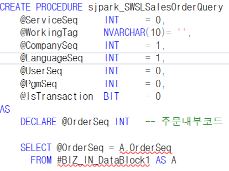
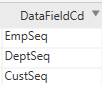
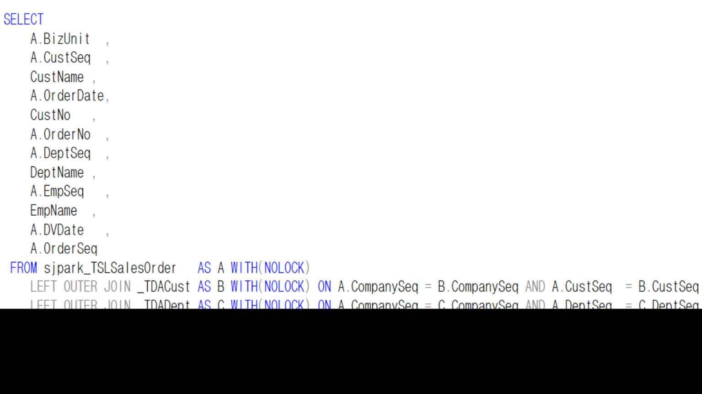

5. 조회 SP 작성
* 조회 SP 만들기
왼쪽,오른쪽 방향으로 가져온 데이터 각각 임시테이블이 만들어짐
** 조회 **
SP명 => sjpark_SWSLSalesOrderQuery

- CREATE PROCEDURE \~~
=> 고정값
- DECLARE @OrderSeq INT
조회조건 => OrderSeq
변수 => OrderSeq
하나만 넘어오기 때문에 변수 설정이 가능 (변수 – 임시변수)
- 메인테이블 (sjpark_TSLSalesOrder)의 컬럼
CompanySeq
OrderSeq
----------- => WHERE 조건절에 들어감
WHERE A.CompanySeq = @CompanySeq
AND A.OrderSeq = @OrderSeq
BizUnit
OrderNo
OrderDate
UMOrderKind
CustSeq
DeptSeq
EmpSeq
DVDate
PgmSeq
LastUserSeq
LastDateTime
==> sjpark_TSLSalesOrder의 값
( NOLOCK => 동시작업 불가능 )
- _TDACust / _TDADept / _TDAEmp

=> LEFT OUTER JOIN
